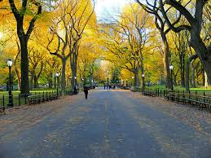
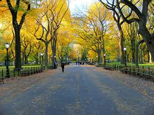
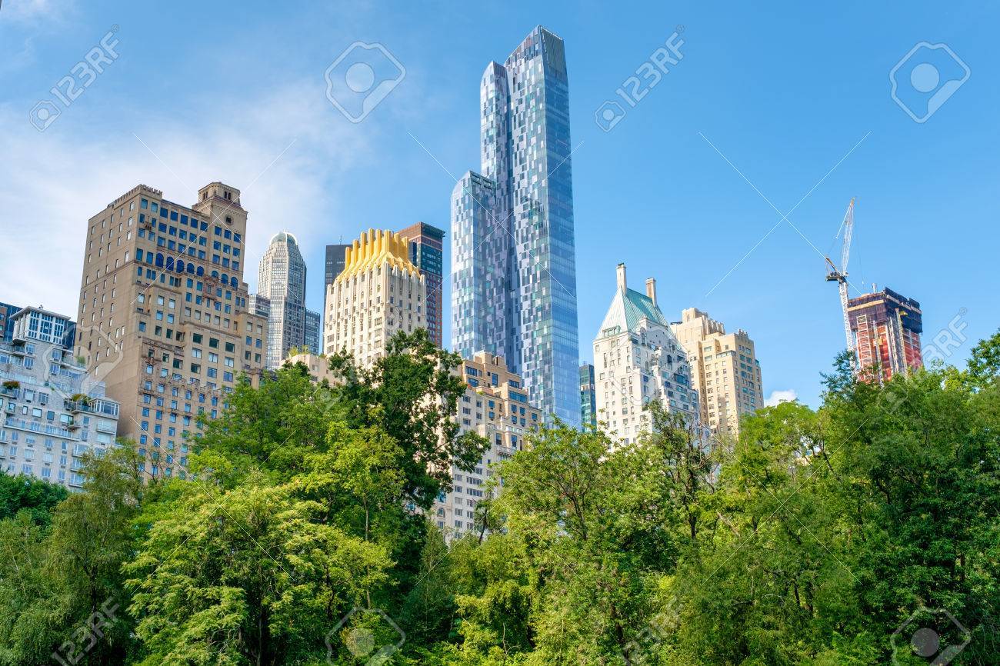
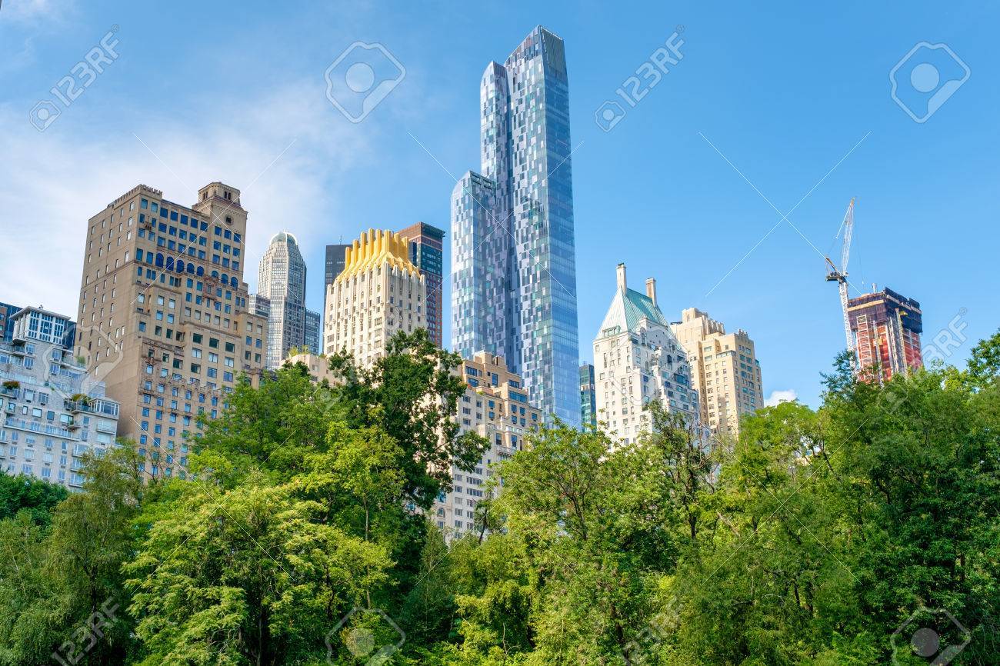

A cidade que nunca dorme
Fotografias
 

 



Vídeo
Poesia
Nova Iorque acorda em aço e luz,
um rio de gente cruza a manhã apressada.
Arranha-céus tocam nuvens sem pedir licença,
sonhos sobem de elevador, andar após andar.
O metrô canta histórias em vozes diferentes,
línguas do mundo se encontram no mesmo vagão.
Cada esquina guarda um começo possível,
cada passo carrega uma ambição.